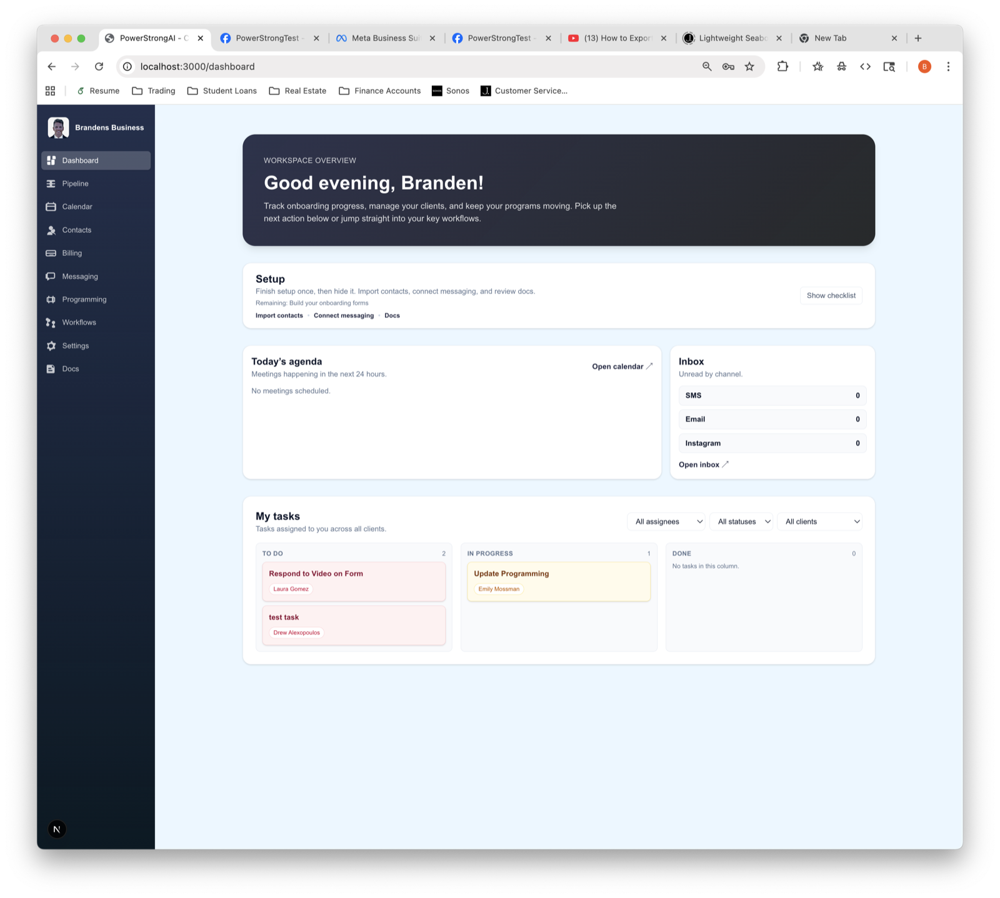
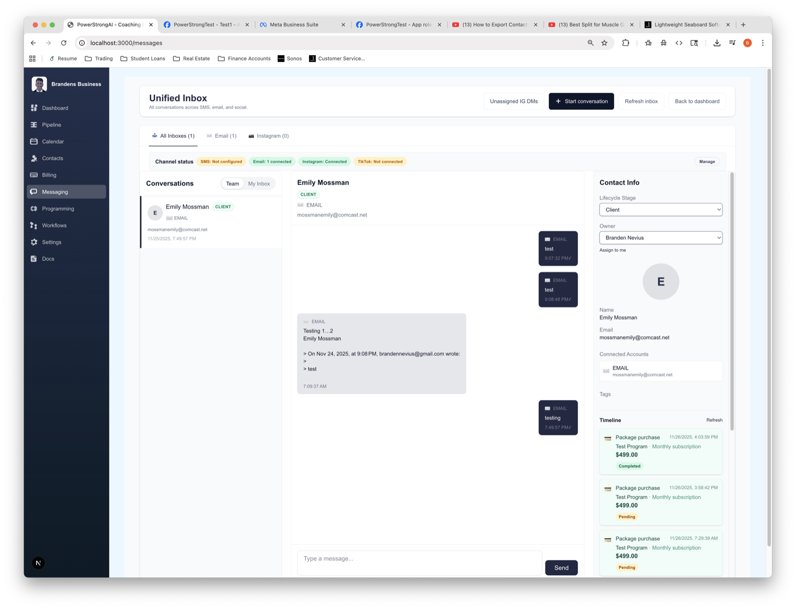
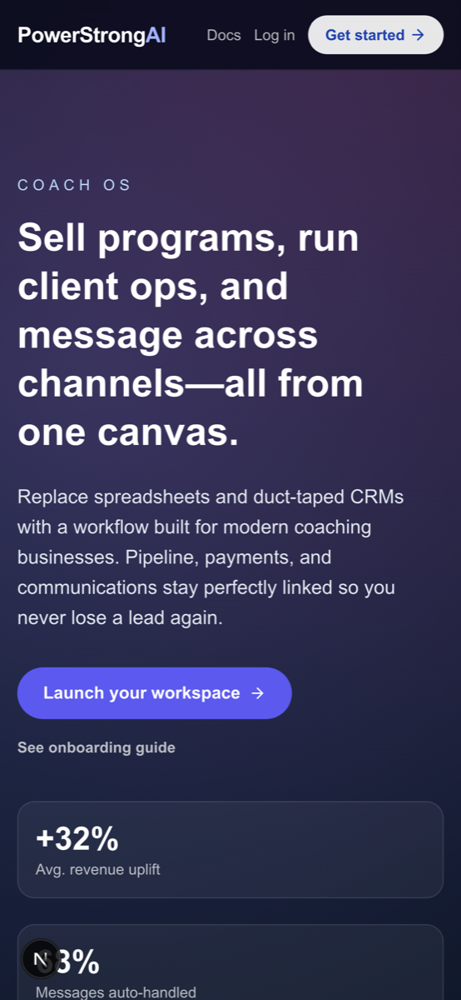

Built the beta foundation for a full coaching ops platform
CRM, messaging, billing, scheduling, workflows, program delivery, and AI-assisted summaries now live in one tenant-aware product.
Systems engineer + AI product builder
I am a Systems Engineer at Saab with an MCS from the University of Illinois Urbana-Champaign. My recent work spans systems architecture, AI-assisted product builds, workflow automation, and operational software that turns fragmented processes into cleaner execution.
The through-line is consistent: I am obsessed with automation, trading systems, finance workflows, and building cleaner ops that hold up outside a demo.
Recent wins
These are the fastest ways to understand my current direction across AI product work, finance tooling, automation, and systems-heavy delivery.
CRM, messaging, billing, scheduling, workflows, program delivery, and AI-assisted summaries now live in one tenant-aware product.
The prototype already covers account linking, transaction sync, debt-payoff planning, goal setup, and coach-style AI insights.
My current dashboard work is built around drawdown recovery, journaling, review cadence, and tighter risk guardrails.
My day job work at Saab and previously Eversource sharpened the architecture, planning, and systems rigor behind the side projects.
Recent projects
Each project is written as a short case study: what problem I was solving, how I approached it, and what the build demonstrates.
Multi-tenant coaching platform that brings CRM, messaging, billing, automations, scheduling, and program delivery into one workspace.
Current progress: Active beta with the platform foundation in place across CRM, messaging, billing, scheduling, and AI workflow support.
Read case studyFinancial coaching product focused on turning transaction data into goals, behavior signals, and AI-assisted insights.
Current progress: Live prototype with working financial data flows, AI insight surfaces, and a clearer debt-payoff and goal-planning loop.
Read case studyPlanned portfolio and risk dashboard for traders who want a clearer read on performance, discipline, and progress toward defined goals.
Current progress: Product structure is defined; next step is pushing the repo and building the first working review loop.
Read outlineCase study 01
A coaching business should not need one tool for CRM, another for messaging, another for billing, and another for program delivery. PowerStrongAI is my attempt to unify that operational stack into one tenant-aware product with AI-assisted workflows and summaries built into the experience.
Fitness and coaching businesses often run sales, communication, payments, and client delivery through disconnected platforms. That makes follow-up inconsistent, reporting fragmented, and the client experience harder to manage.
I built a multi-tenant platform with subdomain-based routing, strict tenant scoping, branded dashboards, CRM pipelines, messaging across multiple channels, Stripe-powered payments, scheduling, workflow automation, and program delivery. I also incorporated AI-assisted summaries and client snapshots so coaches can turn conversations, intake signals, and activity into faster next steps. The stack combines Next.js on the frontend with a NestJS and Prisma backend, PostgreSQL, Redis, and BullMQ for queued workflow execution.
The result is a strong proof point for my ability to design systems that map to real business operations, not just isolated app screens. It demonstrates product thinking across architecture, integrations, AI-enabled workflows, and user experience.
PowerStrongAI is still in beta, so I am treating it as an active build rather than a finished launch story. The meaningful signal right now is platform depth: multi-tenant CRM, messaging, billing, scheduling, programming, and AI summaries in one system.




Case study 02
LEDGR is a financial coaching product focused on behavior change, not just reporting. The idea is to pair connected financial data with clearer goals and AI-assisted guidance.
Personal finance apps often show balances and charts, but they do less to help a user understand behavior, plan around goals, or turn noisy transaction data into a useful coaching conversation.
I built LEDGR with Supabase authentication, Plaid account linking, transaction sync, goal planning, category management, AI chat, and goal payoff insights. The product uses Next.js App Router, Prisma, PostgreSQL on Supabase, and OpenAI, with specific attention to handling sensitive financial flows cleanly.
LEDGR shows how I think about product design when data quality, security, and user trust matter. It turns raw transaction streams into something closer to a guided decision-support experience for users or coaches. Concretely, the prototype already supports connected accounts, transaction sync, AI chat, goal setup, and debt-payoff guidance in one flow.
LEDGR is at the prototype stage, but it is already far enough along to show the full loop I care about: import the financial signal, identify a goal, surface an insight, and move the user toward a better next decision.
Case study 03
This project is not pushed yet, but the product direction is defined. The goal is to build a cleaner feedback loop for trading performance, discipline, and risk.
Traders often track goals, risk limits, notes, and trade reviews across scattered spreadsheets or broker dashboards. That makes it harder to see whether the process is improving or whether rules are actually being followed.
The planned dashboard centers on goal tracking, drawdown and position-size guardrails, trade journaling, weekly reviews, and progress scorecards. The design will favor accountability and pattern recognition over flashy charts alone.
Once shipped, this project will round out the portfolio with another product at the intersection of finance, automation, and decision support. It also connects back to earlier trading tools I built, including an options profit calculator. Even in the outline stage, the core modules are concrete: goal scorecards, journaling, review loops, and drawdown-aware risk controls.
How I work
My background blends enterprise engineering discipline with a strong bias toward building useful products. I like the messy middle where requirements, operations, systems, and user experience all have to line up.
I am comfortable working from business requirements and integration constraints back to the system design that supports them.
I look for ways to reduce repetitive operational work and make workflows more reliable through better tooling and cleaner process design.
My current and past roles required coordination with system engineers, QA, support, and stakeholders with different priorities and technical depth.
A lot of my side projects gravitate toward finance, coaching, analytics, and tools that help people make better decisions with real data.
Contact
I am most interested in work that sits at the intersection of systems thinking, product execution, automation, and messy operational reality. The fastest way to reach me is through Gmail or direct email.